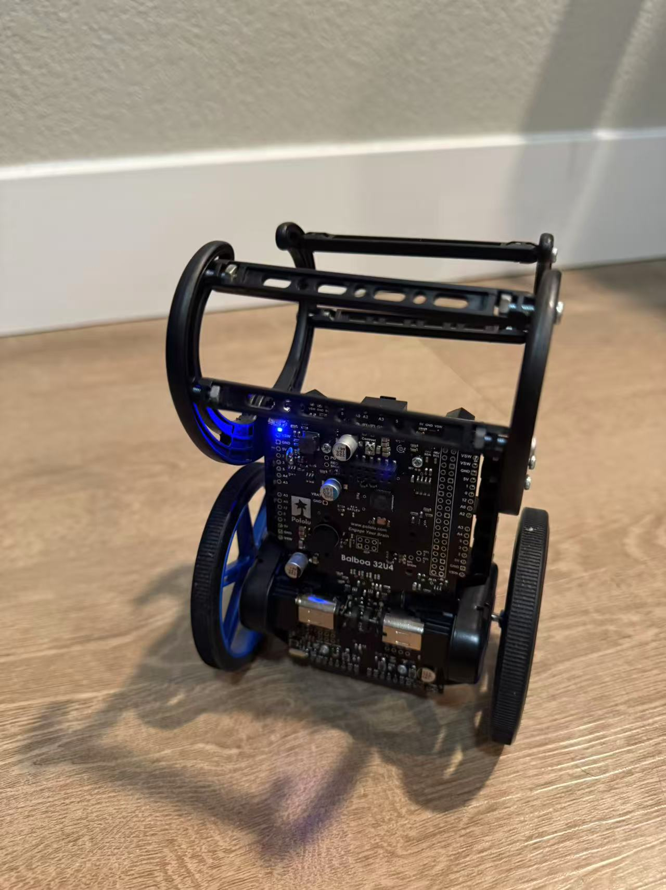

Platform
Pololu Balboa 32U4 robot with differential-drive motors, wheel encoders, and an onboard ATmega32U4 controller.
Embedded Controls • Robotics
A two-wheel balancing robot developed through iterative sensor calibration, feedback-controller design, encoder integration, and real-world disturbance testing.

Project Overview
The goal of this project was to develop a controller that allows a two-wheel robot to balance upright, respond to external disturbances, and recover from moderate changes in position and velocity.
A two-wheel balancing robot behaves like an inverted pendulum. Without continuous correction, gravity causes the robot to accelerate away from its upright position.
The controller therefore has to estimate the robot’s angle, determine how quickly it is falling, and command the motors quickly enough to move the wheels underneath its center of mass.
The project was developed on the Pololu Balboa 32U4 platform. An onboard inertial measurement unit provides angular information, while wheel encoders measure translational movement. These measurements are combined in a custom feedback controller running on the robot’s microcontroller.
Pololu Balboa 32U4 robot with differential-drive motors, wheel encoders, and an onboard ATmega32U4 controller.
IMU measurements provide tilt and angular velocity, while quadrature encoders track wheel speed and position.
A custom controller combines angle, angular velocity, wheel velocity, and wheel position feedback.
Demonstration
The final system demonstrates autonomous balancing, kick-start activation, and recovery after external disturbances.
The robot maintains an upright position through continuous motor corrections based on IMU and encoder feedback.
The controller responds to a physical push by accelerating the wheels, recovering the robot’s angle, and returning toward its original position.
System Architecture
The control loop continuously converts the robot’s measured motion into a corrective motor command.

Read angular velocity from the gyroscope and wheel displacement from the motor encoders.
Estimate the robot’s tilt angle and calculate wheel velocity and accumulated position.
Combine the feedback terms and apply the resulting command to the left and right motors.
Sensor Calibration
Reliable balance control depends on accurate angle and angular-velocity measurements.
Early testing showed that the estimated angle did not match the robot’s physical orientation. When the robot appeared upright, the controller could report a significant tilt. This caused the motors to apply a correction even when the chassis was near its true balancing position.
A startup calibration routine was added to measure the stationary gyroscope bias. An angle offset was then used to align the controller’s zero-angle reference with the robot’s physical balance point.
The robot’s true balance point is not necessarily perfectly vertical because the battery, circuit board, motors, and chassis do not create a perfectly symmetric mass distribution.
Stationary gyroscope samples are averaged during startup and removed from future angular-rate measurements.
The reference angle is adjusted experimentally to match the robot’s actual center-of-mass balance point.
The controller activates only when the robot is within a safe starting range and shuts down after a large fall.
Feedback Controller
The final controller uses four feedback terms to respond to both rotational and translational motion.
The proportional term generates a correction based on how far the robot is tilted away from its target angle.
The derivative term reacts to the speed of the fall and provides damping during rapid angular movement.
Encoder velocity helps the controller recognize translational movement and resist continued acceleration.
Accumulated encoder position gradually encourages the robot to return toward its original operating region.
Controller outputs are accumulated into the motor command so the robot can build sufficient response during a fall.
A small decay factor prevents accumulated motor commands from remaining indefinitely after the disturbance ends.
angleError = measuredAngle - targetAngle;
P = Kp * angleError;
D = -Kd * angularVelocity;
V = -Kv * wheelVelocity;
X = -Kx * wheelPosition;
motorCommand += P + D + V + X;
motorCommand *= commandLeak;
motorCommand = constrain(
motorCommand,
-motorLimit,
motorLimit
);The proportional and derivative terms stabilize the robot’s rotational motion. Encoder velocity and position feedback reduce continued wheel movement and help limit horizontal travel.
The controller uses an accumulated motor command rather than sending only the instantaneous feedback result. This helps overcome motor dead zones and provides a stronger response during rapidly developing falls.
Embedded Implementation
The controller runs repeatedly at a fixed update interval on the Balboa’s embedded microcontroller.
Each cycle reads the sensors, updates the angle estimate, calculates encoder velocity and position, evaluates the feedback controller, and sends the final command to the motors.
Maintaining a consistent loop interval is important because sensor integration, velocity calculation, and controller response all depend on elapsed time.
void balanceController()
{
readIMU();
updateAngleEstimate();
readEncoderCounts();
updateWheelVelocity();
updateWheelPosition();
calculateFeedbackTerms();
updateMotorCommand();
applyDeadzoneCompensation();
synchronizeMotors();
setMotorSpeeds();
}Actuator Compensation
Small PWM commands were not sufficient to overcome static friction in the drivetrain, creating a region where the controller requested motion but the wheels did not respond.
Near the upright position, the controller often generates relatively small corrective commands. Without compensation, these commands can fall below the minimum voltage required to start the motors. The robot therefore continues to tilt while the wheels remain stationary, and the controller must wait until the error becomes large enough to produce a usable motor command.
Dead-zone compensation preserves the direction and relative magnitude of the controller output while adding a minimum effective PWM value. This allows small corrective commands to produce immediate wheel movement instead of being lost inside the drivetrain’s inactive region.
Small control outputs do not move the wheels. The robot must develop a larger angle error before the motors begin responding, producing delayed and abrupt corrections.
Minimum effective PWM values allow the wheels to respond to smaller corrections, reducing delayed motor activation and improving balance near the upright position.
int compensateDeadzone(float command, int minimumPWM)
{
if (command > 0)
{
return command + minimumPWM;
}
if (command < 0)
{
return command - minimumPWM;
}
return 0;
}Compensation is applied only after the controller determines the desired direction. A positive command receives a positive minimum offset, while a negative command receives a negative minimum offset. A zero command remains zero so the motors do not move when no correction is requested.
Separate values can be used for the left and right motors to account for differences in drivetrain friction and motor response.
Kick Start
The robot automatically recognizes when it has been raised into the balancing region and begins active stabilization.
When the robot is lying down, the motors remain disabled. As the chassis is raised toward the upright position, the measured angle eventually enters an activation window.
At that point, the controller initializes its internal position and motor-command values before beginning the balancing loop. This avoids carrying old controller states into a new balancing attempt.
If the robot falls beyond a separate shutdown threshold, motor output is disabled to prevent the wheels from continuing to run while the robot is on the ground.

Controller Tuning
Controller development required repeated testing because each feedback term changes the robot’s physical behavior.
Initial proportional-only tests caused the robot to chase its falling angle without adequately slowing its motion. Adding angular-rate feedback improved damping, but excessive derivative response made the motors react aggressively to sensor noise.
Encoder velocity was introduced to help the robot recognize when the wheels were moving rapidly across the floor. Position feedback was then added to reduce long-distance drift and encourage the system to return toward its initial location.
Debug output was streamed through the serial monitor during testing. The recorded angle, gyroscope rate, wheel speed, wheel position, individual feedback terms, and final motor command made it possible to identify sign errors, saturation, delayed response, and excessive correction.
Each feedback term was tested to confirm that it commanded the wheels in the direction needed to oppose a fall.
Gains were increased or reduced based on oscillation, fall response, wheel acceleration, and recovery behavior.
Individual terms and the final motor command were limited to prevent a single measurement from dominating control.
Engineering Challenges
Early motor commands accelerated the robot in the direction of the fall. Feedback signs were verified individually and corrected through controlled testing.
IMU bias and chassis mass distribution caused the measured zero angle to differ from the physical balance point.
Small PWM commands were insufficient to move the motors. Minimum effective motor commands were added after the controller selected a direction.
Angle control alone could maintain balance while allowing the robot to travel. Encoder feedback was added to manage wheel velocity and position.
Differences between the left and right drivetrains could create turning during balancing. Encoder measurements were used to evaluate wheel synchronization.
Rapid falls could produce large feedback values. Constraints were introduced to keep motor commands within a controllable operating range.
Results
The completed robot demonstrates the central behaviors required for a two-wheel balancing platform.
The robot can enter balance when raised into its activation region, maintain an upright position through continuous feedback, and respond to moderate physical disturbances.
The project also demonstrates the practical difference between controlling orientation and controlling the motion of the entire system. Angle and angular-rate feedback are responsible for immediate balance, while encoder feedback manages the wheel movement required to support that balance.
More importantly, the project provided experience with embedded sensing, real-time control, actuator limitations, experimental gain tuning, and debugging a controller through measured physical behavior.
Automatically activates when raised into the balancing region.
Continuously corrects angle and angular velocity using motor motion.
Responds to moderate external pushes and returns toward its operating position.
Project Files
The controller source code and supporting project materials are available through GitHub.